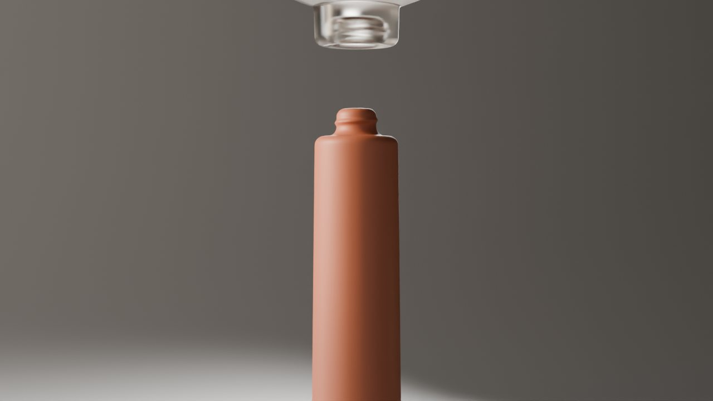
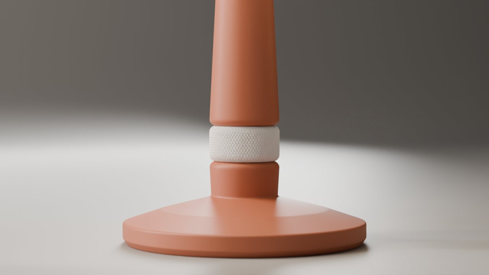

One curve. Whole product. Draw half an outline in Blender and qdR turns it into a part with real walls, joints, threads and grips.
qdR is a Blender add-on for sketching revolved geometry, live. You draw half an outline, the way you would on paper, and it becomes a revolved part straight away. The curve stays live the whole time: move a point and every part rebuilds around it as you drag.
On top of that one curve you get control over the details that make it a real product: splits into separate parts, joints and threads at the seams, wall thickness, fillets and bevels on the corners, ribs, flutes and knurl patterns, part names and materials, and the quality level of the result. Change any of them and the model updates in place, so you can keep sketching instead of rebuilding.
It is primarily a concept tool, made for the early stage of a design, when you want many believable options fast. Because the parts carry real walls, joints and dimensions, it can also take an idea all the way to a final model depending on the use case and the manufacturing process.
Split on a straight stretch of wall and the lip and seat are built for you.
Any size, same wall, in true millimetres.


Caps that actually screw on.
Knurls, flutes, ribs and flats.
Everything lives in one sidebar tab in the 3D Viewport (press N, then open qdR). Here is what each panel is for. The full PDF guide, with every setting and a picture for each, comes with your download.
FULL PDF GUIDE INCLUDED€20 gets you the add-on and the full PDF guide. It runs inside Blender, so your renders, materials and exports work as they always do.